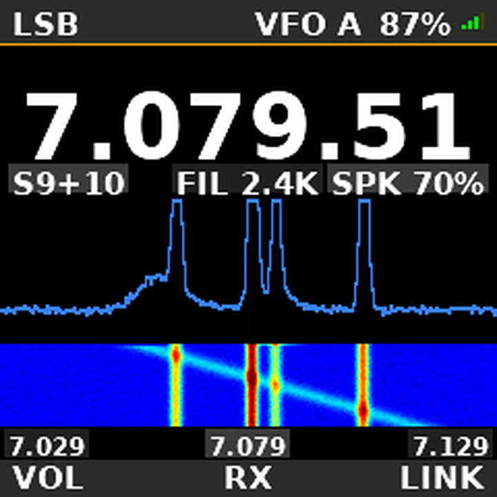

MRRC Handheld
手持电台终端
把一台 40 元的「星光立方」ESP32-S3 小音箱，改造成 MRRC Modern 的手持操作终端： 实时频谱与瀑布、一键 PTT 发射、双向语音、S 表与驻波显示。 纯 ESP-IDF C 实现，固定布局手绘 UI，开机 3 秒可用。

01它是什么
一个跑在 8 MB PSRAM / 16 MB Flash 上的独立固件，通过 Wi-Fi 直连 MRRC Modern 服务器（wss + TLS），不依赖手机、不依赖浏览器。
四路 WebSocket
控制（/WSradio）、频谱（/WSspectrum）、下行音频（/WSaudioRX）、上行音频（/WSaudioTX） 各占一条连接，互不阻塞。
实时频谱 + 瀑布
850 bin 的 FT-710 原生扫频数据，12 fps 刷新；Jet 配色与 Floor/Ceil 映射和网页端完全一致，看的是同一张图。
PTT 安全链
松手先停帧、再发 s:、最后 ptt:false；180 秒硬超时；
独立高优先级心跳任务，即使 Opus 编码占满 CPU 也不会掉线。
仪表齐全
S 表、滤波器带宽、AF 增益、发射功率、驻波、ALC、电池百分比，
全部来自服务器推送的 fullState / stateUpdate。
零框架开销
不用 LVGL：240×240 帧缓冲 + 固定脏区刷新，UI 任务只在数据变化时重绘， 全程 12 fps 也只占一个核的一小部分。
一条命令烧写
分区表保留 NVS 偏移，升级固件不会丢 Wi-Fi 与激活信息；
tools/build_on_mac.sh flash 交叉编译 + 烧写一步完成。
02界面
上条为状态（模式 / VFO / 电池 / Wi-Fi），中部是大号白色频率，下面是频谱与瀑布，底部一条操作栏。
接收：S 表 / 滤波 / AF
 发射：功率 / 驻波 / ALC，频率转红
发射：功率 / 驻波 / ALC，频率转红

音量模式：底部切换为 VOL03硬件与引脚
目标机型 coolkit-xz-02（= nologo/xingzhi-cube-1.54tft-wifi
OEM 变体）。引脚不是猜的：先用 JTAG 读原厂固件运行时的 GPIO matrix 寄存器，
再逐项对照原厂源码确认。
| 功能 | GPIO | 说明 |
|---|---|---|
| LCD SCLK / MOSI | 9 / 10 | SPI2，24 MHz |
| LCD DC / CS / RST | 8 / 14 / 18 | ST7789 240×240 |
| LCD 背光 | 13 | LEDC PWM，5 kHz |
| 功放 I2S0 | 15 / 16 / 7 | BCLK / WS / DOUT，48 kHz |
| 麦克风 I2S1 | 5 / 4 / 6 | BCK / WS / DIN，16 kHz |
| 按键 | 0 / 40 / 39 | BOOT（长按 PTT，双击切模式）/ VOL+ / VOL- |
| 电池 / 充电 | 17 / 38 | ADC2_CH6 / 充电检测 |
| 电源保持 | 21 | RTC-IO mux 拉高 |
04编译与烧写
需要 ESP-IDF 5.4（esp32s3 工具链）。仓库自带交叉编译脚本，可以在一台
8 核 Mac 上编译、拉回产物、再烧写到本机 USB 口。
# 1. 克隆 git clone https://github.com/cheenle/mrrc-handheld.git cd mrrc-handheld # 2. 配置服务器与 Wi-Fi（写入 sdkconfig.defaults 即可，不会进 git） idf.py menuconfig # MRRC Handheld → Server / Wi-Fi # 3. 本机编译 + 烧写 idf.py -p /dev/ttyACM0 flash monitor # 或者：在另一台 Mac 上编译（8 核约 90 秒），本地烧写 ./tools/build_on_mac.sh flash
# 手工烧写（保留 NVS：Wi-Fi 与配网信息不会丢）
esptool.py -p /dev/ttyACM0 -b 921600 write_flash \
--flash_mode dio --flash_size 16MB --flash_freq 80m \
0x0 build/bootloader/bootloader.bin \
0x8000 build/partition_table/partition-table.bin \
0x10000 build/mrrc_handheld.binesptool.py read_flash 0 0x1000000 backup.bin），
任何时候都能用 write_flash 0x0 backup.bin 回到原厂固件。
05已知限制
仅适配一种机型
引脚与 I2S 配置是为 coolkit-xz-02 固化并逐项验证的；
换板子需要改 board_pins.h 并重新确认 LCD 的字节序与反色。
麦克风灵敏度
原机 I2S MEMS 麦在语音带输出偏低，靠服务器端降噪与近讲使用； 不要用软件增益硬拉，会把直流偏置一起放大。
依赖局域网/公网服务器
终端只做显示与语音，收发信机由 MRRC Modern 服务器通过 CAT 控制；
服务器不可达时显示 noSRV 并自动重连。